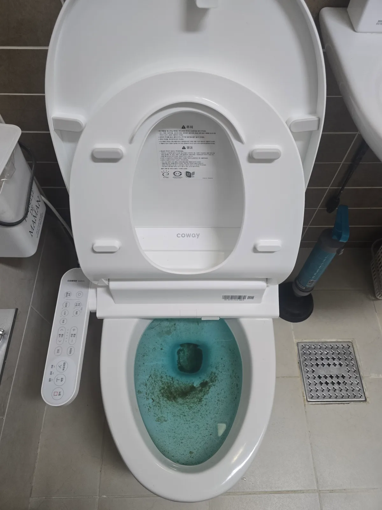

강남구 논현동 변기막힘, 현장 도착 후 진단
변기가 또 막혔다는 긴급 요청을 접수한 뒤 전문 장비를 준비해 강남구 논현동 오피스텔 현장으로 신속하게 이동했습니다. 학생이 생활하는 집이었으며 화장실과 변기 주변은 매우 깔끔하게 관리되고 있었습니다.
하지만 변기막힘은 집의 청결 상태만으로 판단할 수 없습니다. 깨끗하게 사용하는 변기라도 많은 양의 휴지가 한꺼번에 들어가거나 작은 생활 이물질이 변기 내부 굴곡에 걸리면 반복적인 막힘이 발생할 수 있습니다. 변기보다 아래쪽에 연결된 오수배관의 흐름이 원활하지 않을 때도 물이 천천히 내려가거나 수위가 다시 차오르는 비슷한 증상이 나타납니다.
변기막힘을 전문적으로 처리해 온 숙련 기술자가 현재의 수위와 배수 상태를 먼저 확인했습니다. 이번에는 즉시 변기를 탈거해 작업 범위를 키우기보다 리지드 습식 석션기를 사용해 막힌 구간을 우선 해결하고, 통수 상태를 확인한 뒤 추가 작업 여부를 판단하기로 했습니다.
1단계: 증상 확인과 필요한 장비 작업
변기 내부에 물이 정체된 상태를 확인한 뒤 리지드 습식 석션기에 변기 전용 호스를 연결했습니다. 호스를 변기 배수구 안쪽에 밀착시키고 강한 흡입력을 집중해 내부에 정체된 오수와 이물질을 끌어내는 석션 작업을 진행했습니다.
변기 내부의 압력 변화와 수위 움직임을 살피면서 석션을 반복하자 막혔던 물길이 시원하게 열리기 시작했습니다. 변기 내부에 정체돼 있던 물이 빠르게 내려가면서 배수 기능도 정상적으로 회복됐습니다.
무조건 강한 압력을 가하는 것이 아니라 변기 트랩의 구조와 막힘 반응을 확인하면서 장비를 운용했습니다. 자칫 이물질을 더 깊이 밀어 넣지 않도록 흡입 방식으로 막힌 구간을 처리한 것이 이번 논현동 변기막힘 작업의 핵심입니다.

2단계: 원인 구간 처리와 정상 작동 확인
석션으로 물길을 확보한 뒤 한 번의 배수만 보고 작업을 끝내지 않았습니다. 변기 물을 여러 차례 내려보내면서 물이 차오르거나 꿀렁거리는 증상이 다시 나타나는지 확인하고, 배수 속도와 수위 회복 상태까지 점검했습니다.
이번에는 석션 작업만으로 변기막힘이 시원하게 해결돼 당장 변기를 탈거할 필요는 없었습니다. 불필요한 추가 작업을 진행하기보다 현재 필요한 범위에서 문제를 해결한 뒤 재발 가능성을 설명했습니다.
다만 이전에도 같은 변기가 자주 막혔던 만큼 짧은 기간 안에 동일한 증상이 다시 발생한다면 석션만 반복하는 것은 적절하지 않을 수 있습니다. 이 경우에는 변기를 탈거해 굴곡진 내부 트랩에 이물질이 남아 있는지 확인하고, 변기 하부의 오수관 초입부까지 직접 점검해야 정확한 원인을 찾을 수 있습니다.

작업 결과와 재발 방지 안내
리지드 석션 작업 후 변기 물은 막힘 없이 시원하게 내려갔으며 여러 차례의 통수검사를 통해 정상적인 배수 상태를 확인했습니다. 처음 발생한 변기막힘이나 휴지와 오물이 일시적으로 뭉친 경우에는 전문 석션 작업만으로도 충분히 해결될 수 있습니다.
그러나 변기가 자주 막히거나 석션 후에도 동일한 증상이 반복된다면 단순 막힘으로만 판단해서는 안 됩니다. 변기 내부에 단단한 이물질이 남아 있거나 하부 오수관의 배수 흐름에 문제가 있을 수 있기 때문입니다. 이때 진행하는 변기 탈거는 작업비를 늘리기 위한 과정이 아니라 반복되는 원인을 직접 확인하고 재발 가능성을 낮추기 위한 정밀 점검 방법입니다.
변기에는 물티슈, 음식물, 반려동물 배변패드, 플라스틱과 같은 생활용품을 버리지 않아야 합니다. 휴지를 많이 사용한 경우에도 한꺼번에 내리기보다 나누어 물을 내려주는 것이 변기막힘 예방에 도움이 됩니다.
신라건축설비는 강남구 논현동을 비롯한 서울 전 지역과 경기권에 신속하게 출동해 변기막힘·싱크대막힘·하수구막힘을 전문적으로 해결합니다. 단순 석션과 관통 작업부터 변기 탈거, 배관 내시경검사, 하부 오수관과 공용배관 진단, 고압세척, 배관 보수·교체 및 대형 배관공사까지 숙련 기술자와 전문 장비를 통해 현장 상황에 맞춰 자체 대응합니다.
최종 조치: 변기 내부에 전용 석션 호스를 밀착해 강한 흡입 작업을 반복하고 막힌 구간을 시원하게 통수시켰습니다. 작업 후 여러 차례 물을 내려 정상적인 배수 속도와 수위 회복을 확인했으며, 같은 변기막힘이 다시 발생할 경우에는 석션만 반복하지 않고 변기를 탈거해 내부 굴곡과 하부 오수관 초입부까지 직접 점검하기로 안내했습니다.
현장 방문 전 확인하는 비용과 작업 범위
신라건축설비는 현장 증상과 배관 구조를 확인한 뒤 필요한 작업과 예상 비용을 안내합니다. 단순 관통으로 해결되는지, 배관내시경·석션·고압세척 또는 변기 탈거가 필요한지는 현장 상태에 따라 달라집니다. 출장비와 야간 작업비, 추가 장비 비용이 발생할 수 있는 경우 작업 전에 먼저 설명하고 동의를 받은 범위에서 진행합니다.
업체를 선택할 때 확인할 사항
무조건적인 ‘0원’ 표현보다 실제 작업 범위, 추가 비용 조건, 사용 장비와 사후 대응 기준을 확인하는 것이 중요합니다. 해결되지 않았을 때의 비용 기준과 작업 후 동일 증상 발생 시 점검 범위를 사전에 문의해두면 불필요한 분쟁을 줄일 수 있습니다.
강남구 변기막힘 자주 묻는 질문
변기막힘은 왜 반복되나요?
강남구 논현동 현장처럼 평소 깔끔하게 관리되는 오피스텔 화장실이었지만 변기가 이전에도 여러 차례 막혔고, 이번에도 물이 천천히 내려가면서 변기 내부의 수위가 불안정해진 상태였습니다. 증상은 원인이 현장마다 다를 수 있습니다. 변기 내부 이물질뿐 아니라 하부 오수관 막힘이나 배관 상태 때문에 반복될 수 있습니다. 같은 변기막힘이 재발하면 막힌 위치와 원인을 다시 확인하는 것이 중요합니다.
변기 물이 안 내려가거나 역류하면 변기뚫는업체를 불러야 하나요?
물이 천천히 내려가거나 수위가 차오르고 변기역류가 반복되면 단순 뚫어뻥보다 전문 장비 점검이 필요한 경우가 있습니다. 현장에서는 증상과 배관 구조를 먼저 확인합니다.
변기 이물질 막힘은 변기를 탈거해야 하나요?
물티슈·청소포·플라스틱·음식물처럼 변기 트랩에 걸린 이물질은 위치에 따라 변기 탈거가 필요할 수 있습니다. 무조건 탈거하지 않고 먼저 막힘 위치를 판단합니다.
변기뚫는업체는 어떤 장비로 작업하나요?
현장 상태에 따라 석션, 에어건, 배관내시경, 변기 탈거 등을 사용합니다. 하부 오수관 문제라면 변기만 뚫는 작업보다 배관 구간 확인이 중요합니다.
변기막힘 비용은 어떻게 정해지나요?
단순 관통인지, 이물질 제거와 변기 탈거가 필요한지, 오수관이나 공용배관 작업이 필요한지에 따라 달라집니다. 추가 장비나 작업이 필요하면 진행 전에 범위와 비용을 안내합니다.
변기에서 냄새가 나거나 물이 자주 차오르는 것도 막힘과 관련 있나요?
악취나 수위 이상이 항상 막힘 때문인 것은 아니지만 배수 불량, 오수관 상태, 연결부 문제와 함께 나타날 수 있습니다. 반복되면 현장 점검으로 원인을 구분해야 합니다.
변기막힘 서울·경기 출동지역
신라건축설비는 강남구 논현동 현장을 포함해 서울 25개 구와 경기도 31개 시·군의 배관 문제를 상담합니다. 현장 거리와 기사 배정 상황에 따라 출동 가능 여부를 먼저 안내드립니다.
서울 전 지역
강남구 · 강동구 · 강북구 · 강서구 · 관악구 · 광진구 · 구로구 · 금천구 · 노원구 · 도봉구 · 동대문구 · 동작구 · 마포구 · 서대문구 · 서초구 · 성동구 · 성북구 · 송파구 · 양천구 · 영등포구 · 용산구 · 은평구 · 종로구 · 중구 · 중랑구
경기도 주요 출동지역
수원시 · 용인시 · 고양시 · 화성시 · 성남시 · 부천시 · 남양주시 · 안산시 · 평택시 · 안양시 · 시흥시 · 파주시 · 김포시 · 의정부시 · 광주시 · 하남시 · 광명시 · 군포시 · 양주시 · 오산시 · 이천시 · 안성시 · 구리시 · 의왕시 · 포천시 · 양평군 · 여주시 · 동두천시 · 과천시 · 가평군 · 연천군